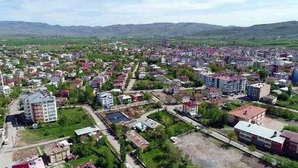
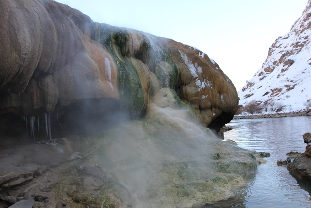
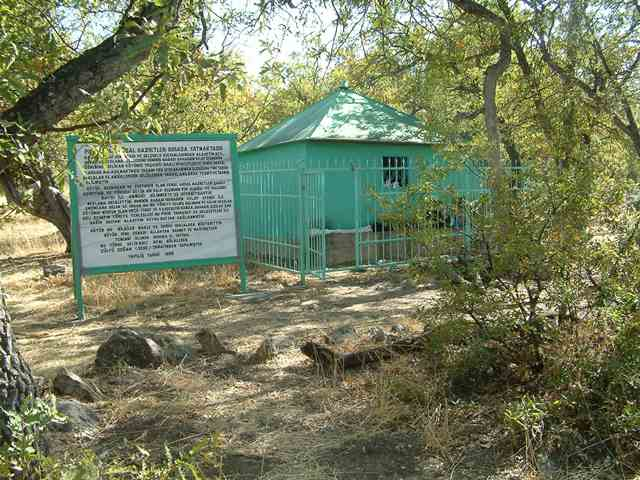

Karakoçan ilçesi 1936 yılında ilçe olmuş olup Elazığ il merkezine uzaklığı 104 km'dir.İlçenin nüfusu 2019 yılı verilerine göre 28.142'dir.İlçenin en önemli gelir kaynağı hayvancılıktır.İlçe toprakları içinden akmakta olan Peri Çayı üzerinde Özlüce ve Kalecik Barajları bulunmaktadır.Karakoçan ilçesinde anıtsal kültür varlığı arasında ; Ziyaret Tepesi ve Urartu Kaya Mezarı( Hz. Kureyş'in İkametkahı) bulunmaktadır.İlçenin batısında Yoğunağaç Köyü'nde Peri Çayı'nın yanı başında bulunan Golan Kaplıcaları her yıl binlerce ziyaretçinin akınına uğramaktadır. Refik Saydam Merkez Hıfsı Sıhha Enstitüsü'nün raporuna göre bu kaplıcaların romatizma, nevrit, poli-nevrit, kırık-çıkık,kadın hastalıkları ve cilt hastalıklarının tedavisine iyi geldiği belirtilmektedir.
Karakoçan ilçesi 1936 yılında ilçe olmuş olup Elazığ il merkezine uzaklığı 104 km'dir.İlçenin nüfusu 2019 yılı verilerine göre 28.142'dir.İlçenin en önemli gelir kaynağı hayvancılıktır.İlçe toprakları içinden akmakta olan Peri Çayı üzerinde Özlüce ve Kalecik Barajları bulunmaktadır.Karakoçan ilçesinde anıtsal kültür varlığı arasında ; Ziyaret Tepesi ve Urartu Kaya Mezarı( Hz. Kureyş'in İkametkahı) bulunmaktadır.İlçenin batısında Yoğunağaç Köyü'nde Peri Çayı'nın yanı başında bulunan Golan Kaplıcaları her yıl binlerce ziyaretçinin akınına uğramaktadır. Refik Saydam Merkez Hıfsı Sıhha Enstitüsü'nün raporuna göre bu kaplıcaların romatizma, nevrit, poli-nevrit, kırık-çıkık,kadın hastalıkları ve cilt hastalıklarının tedavisine iyi geldiği belirtilmektedir.


Ayrıca Karakoçan ilçesinde Garip Baba, Pir Cemal Abdal Hazretleri, Güzel Baba, Sefkar Baba (Seyyid İbrahim) türbeleri sık sık ziyaret edilen türbeler arasındadır.
